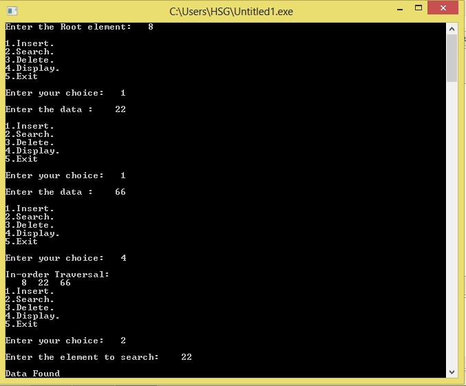

/* C program to implement binary search tree */
#include <stdio.h>
#include <conio.h>
#include <malloc.h>
struct node
{
int data;
struct node *lc,*rc;
};
typedef struct node NODE;
void create(NODE **,int);
void inorder(NODE *);
void search(NODE * ,int);
void del(NODE **,int);
void chk_node(NODE **,int,NODE **,NODE **,int*);
void main()
{
NODE *root=NULL;
int data;
char ch;
printf("Enter the Root element: ");
scanf("%d",&data);
create(&root,data);
while(1)
{
printf("\n1.Insert.");
printf("\n2.Search.");
printf("\n3.Delete.");
printf("\n4.Display.");
printf("\n5.Exit\n");
printf("\nEnter your choice: ");
fflush(stdin);
scanf("%c",&ch);
switch(ch)
{
case '1':
printf("\nEnter the data : ");
scanf("%d",&data);
create(&root,data);
break;
case '2':
printf("\nEnter the element to search: ");
scanf("%d",&data);
search(root,data);
break;
case '3':
printf("\nEnter the element to delete: ");
scanf("%d",&data);
del(&root,data);
break;
case '4':
printf("\nIn-order Traversal:\n");
inorder(root);
break;
case '5':
exit(1);
default:
printf("\nWrong Choice.");
}
}
}
/* function to create binary search tree */
void create(NODE **root,int d)
{
if(*root==NULL)
{
*root=(NODE *)malloc(sizeof(NODE));
(*root)->data=d;
(*root)->lc=NULL;
(*root)->rc=NULL;
return;
}
else
{
if( d < (*root)->data )
create(&((*root)->lc),d);
if( d > (*root)->data )
create(&((*root)->rc),d);
if( d == (*root)->data )
printf("\nData already exist.");
}
}
/* Funtion for in-order Traversal */
void inorder(NODE *root)
{
if(root!=NULL)
{
inorder(root->lc);
printf("%4d",root->data);
inorder(root->rc);
}
}
/* Function to search a node in binary search tree */
void search(NODE *root,int d)
{
if(root!=NULL)
{
if( d < root->data )
search(root->lc,d);
if( d > root->data )
search(root->rc,d);
if( d == root->data )
printf("\nData Found");
}
else
printf("\nData not Found");
}
/* Function to delete a node from binary search tree */
void del(NODE **root,int n)
{
int found;
NODE *parent,*x,*xsucc;
if(*root==NULL)
printf("\nTree is empty");
parent=x=NULL;
chk_node(root,n,&parent,&x,&found);
if(found==0)
printf("\nNot Found!\n");
if(x->lc!=NULL && x->rc!=NULL)
{
parent=x;
xsucc=x->rc;
while(xsucc->lc!=NULL)
{
parent=xsucc;
xsucc=xsucc->lc;
}
x->data=xsucc->data;
x=xsucc;
}
if(x->lc==NULL && x->rc==NULL)
{
if(parent->rc==x)
parent->rc=NULL;
else
parent->lc=NULL;
}
if(x->lc==NULL && x->rc!=NULL)
{
if(parent->lc==x)
parent->lc=x->rc;
else
parent->rc=x->rc;
}
if(x->lc!=NULL && x->rc==NULL)
{
if(parent->lc==x)
parent->lc=x->lc;
else
parent->rc=x->lc;
}
}
/* function to check the availability of any node */
void chk_node(NODE **root,int n,NODE **par,NODE **x,int *found)
{
NODE *q;
q=*root;
*found=0;
*par=NULL;
while(q!=NULL)
{
if(q->data==n)
{
*found=1;
*x=q;
return;
}
*par=q;
if(q->data>n)
q=q->lc;
else
q=q->rc;
}
}
